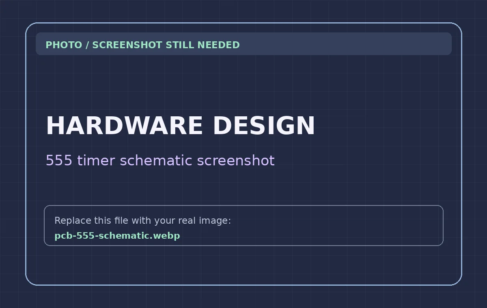

Represent the circuit
Capture the circuit and verify pin connections and values before moving to layout.
Hardware design / KiCad / 2026
I've been developing my PCB design workflow in KiCad, including schematic capture, footprint selection, routing, electrical checks, and fabrication outputs. Two examples are a 555 timer oscillator and an amplifier board.

01 / 555 timer oscillator
A 555 timer astable is a simple enough circuit to understand, but building a usable board layout still requires checking the connections, matching symbols with footprints, placing parts, and routing traces.
Capture the circuit and verify pin connections and values before moving to layout.
Associate footprints, arrange the components, and route the copper connections.
Use electrical and design-rule checks to catch mistakes before producing manufacturing files.

02 / amplifier board
For an amplifier PCB assignment, I worked through board connections, routing, edge cuts, layout checks, and the steps needed to export a Gerber package. I learned how easy it is for a schematic and a PCB layout to drift apart if I don't verify the nets carefully.
I'd like to show a clean screenshot of the final routed board and a quick overview of the exported fabrication layers. I'm leaving those image slots clearly labeled until the real screenshots are added.
Documentation note: a routed board and Gerber files are a manufacturing handoff, not proof that the fabricated circuit has been electrically tested.
Designing a board means thinking beyond whether a circuit works on paper. Footprints, clearances, orientation, mechanical dimensions, and file outputs all affect whether someone can actually build it.